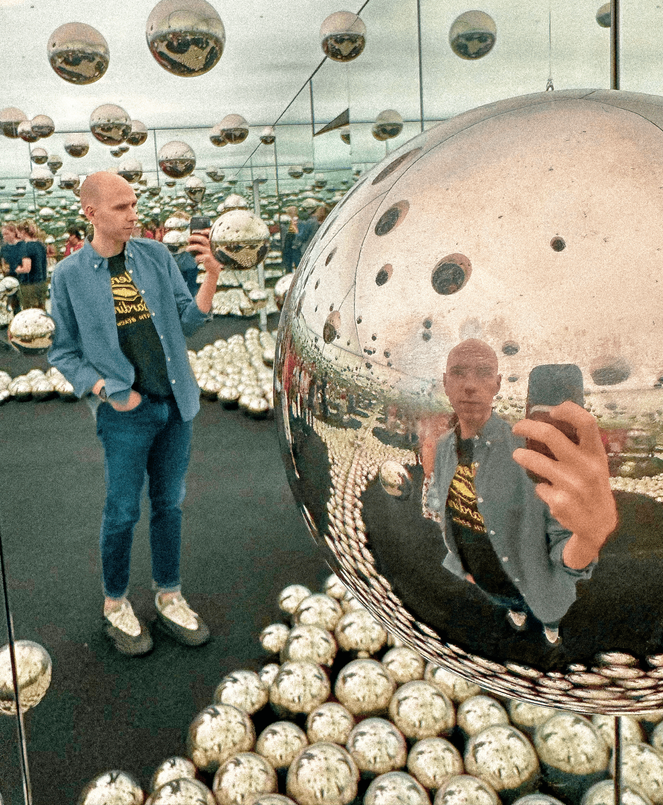
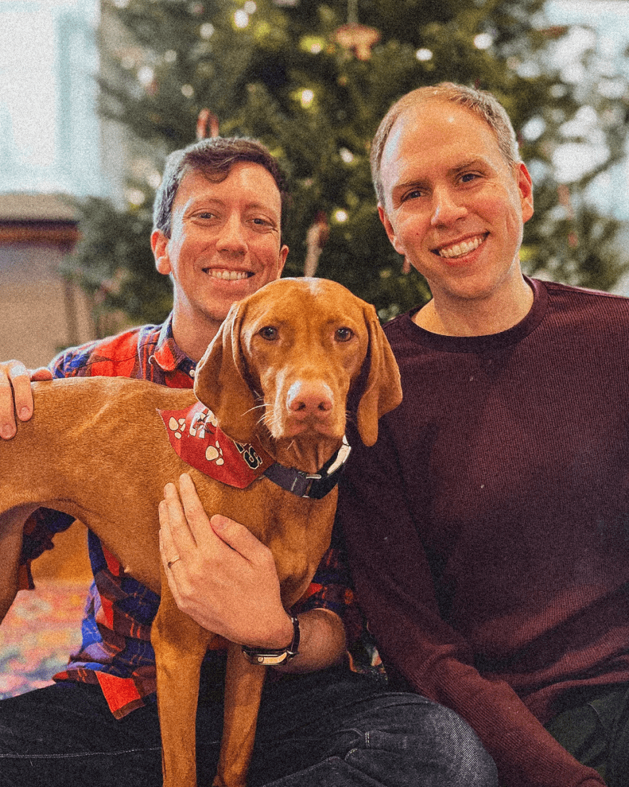

About
More about me and how I work

About me
With a foundation in graphic design and over a decade of experience shaping visual identities, I’ve honed my ability to
craft design systems that are both strategic and striking.
As the tools for creativity evolve with AI, the challenge is no longer just building efficiently but standing out
authentically. The ease of producing ‘good enough’ design has raised the stakes for creating work that is distinct and
resonant.
Leading a team of designers and videographers, I focus on fostering a collaborative environment where creativity thrives
and strategic thinking drives every project. By empowering my team to explore bold ideas while staying aligned with
business goals, we create work that inspires trust, drives engagement, and leaves a lasting impression.
Great design isn’t just seen—it’s felt, and it’s brought to life by teams that know how to tell stories with impact.
Skills
Creative Direction
Visual Design
Web Design
Branding
UI Animation
Education
Coastal Carolina University
Bachelor of Arts: Graphic Design
Beyond the Pixels
Get a taste of who I am through what inspires and fuels my creativity.